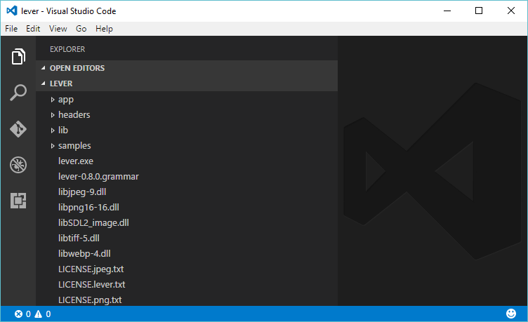
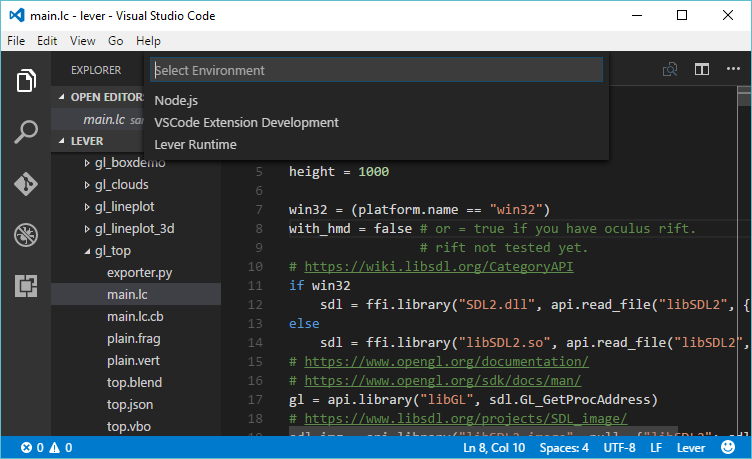
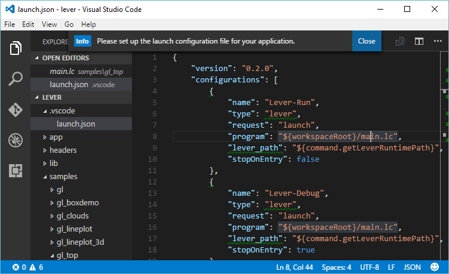
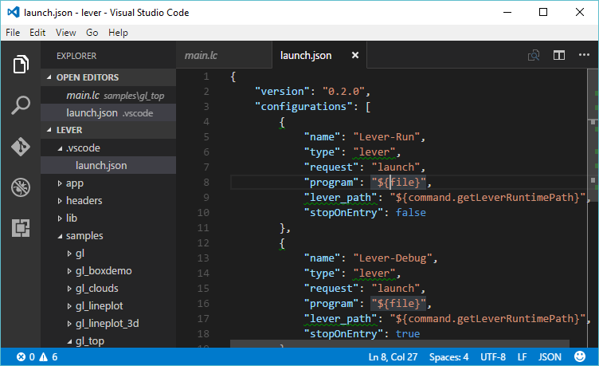
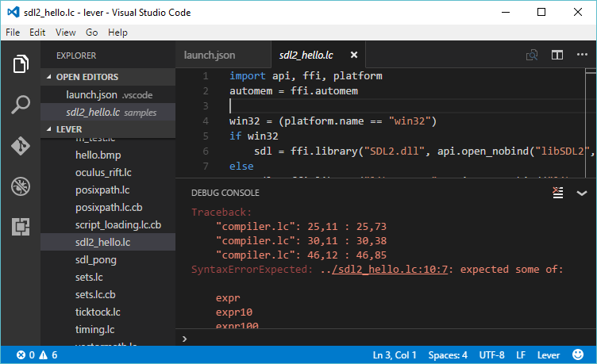
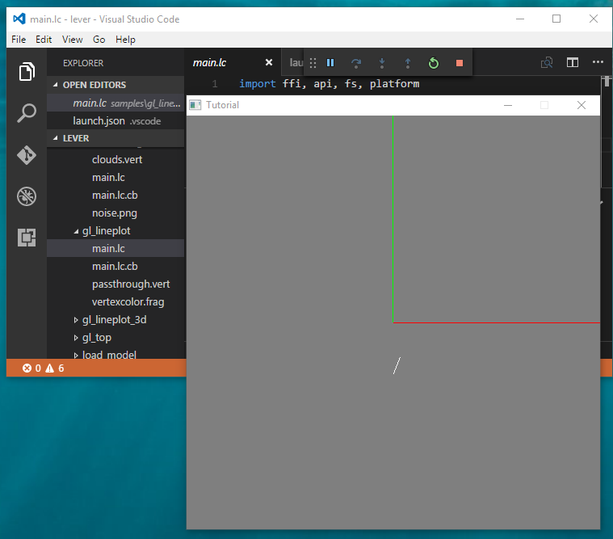

The samples directory will be revised for the next release, but so far it's got some big and small programs, and some programs won't work.
To try out samples, pop into the lever runtime with the 'File' -> 'Open Folder'
Then press F5, yes, runtime doesn't have .vccode for this purpose. Fortunately VSCode creates it for you when you pick "Lever Runtime".
To have a file opened rather than 'main.lc', replace every "program" option with "${file}"
 Now you can finally select some file ending with ".lc" and run it!
The debug console points out if there's an error. I'm sorry about the wrong file reference in the error message. Will be fixed in the next version!
There are some programs that run, most of the better ones crashed on something trivial when I tested them.
Anyway, this is how you can run sample programs, pop into the directory and run!